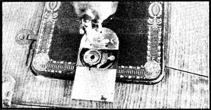

[1] Singer is first choice, White second, and other brands should be purchased only if complete (check for bobbins, presence of operating manual, and condition of moving parts). Singers are more numerous and, therefore, parts for them are more readily available if not from dealers, then from other old machines.
[2] Singer made various models, and accessories are not equally easy to find in all cases. If the machine you're considering comes with only one or two bobbins, for instance, make sure they're the disc variety rather than the scarcer long type.
[3] Look over the machine carefully. A few small parts may be missing, but such pieces are generally replaceable. Major hardware, however, is more difficult to obtain or repair. Move the treadle to be sure it functions, and check the rods that connect it to the wheel. See if the skirt guard a handy item is in place. And, no matter what its condition, if you come on an unusable machine for free or a couple of dollars, take it. It may be a fine source of parts.
[4] If you're at an auction and overhear some woman saying that she wants a treadle operated sewer because the cast iron base makes a nice table or the drawers make pretty flower boxes, outbid her if you can. This sort of thing is being done far too often, and it's a terrible waste of good sewing machines.
[1] Replace missing parts. Items like the spool post or leather wheel belt can be purchased at a sewing machine parts store.
[2] Run sewing machine oil through the various oil ports.
[3] Use Three In One oil to clean the surface of the head (the working part of the machine). Detergent may strip the gold leaf ornament. The metal on our Singer was completely black when we started refurbishing the machine, and we were joyfully surprised to find the baroque scrolling underneath.
[4] To redo the cabinet as the fine piece of furniture it is, we chose the rough way by stripping the old varnish with straight ammonia. (There must be a better method!) Then we refinished the wood and painted the iron parts with black enamel.
Rest assured that a treadle sewing machine can be used as creatively as any zigzag. Just remember that your first couple of hours with the device are a period of social development, and don't try anything elaborate right away.
The adjustment is greatly simplified by a good book on the operation of the foot powered machine. My favorite is Machine Sewing: A treatise on the care and use of Family Sewing Machines and their attachments especially prepared for teachers of home economics, published by Singer Sewing Machine Co., Inc. of New York in 1923. Check old book sales for this work it's valuable to treadle machine users. (Machine Sewing is no longer available and I can't reproduce any portions of it because the Singer Company's policy does not allow reprinting of the firm's copyrighted publications, Singer, unfortunately, has no other information on treadle machines for sale or free distribution, MOTHER. )
Here are some basic rules to make foot powered sewing easier:
[1] From page 7 of Machine Sewing: "The most comfortable and effective position for treadling is with the ball of the left foot upon the upper left corner of the treadle and the heel of the right foot on the lower right corner. Treadling in this position takes very much less effort than when the feet are placed in any other position." It works.
[2] Always use the same thread on the bobbin as on the head. The two strands must be from the same spool or you'll be fiddling with the tension until you go mad.
[3] The machine has no reverse. Just turn the material around and stitch over any place you wish to reinforce.
[4] The large band wheel that drives my Singer's mechanism is equipped with a belt shifter to remove the leather strap when necessary. I found that this device interfered with the belt and often knocked it off while I was sewing so I tied it to the skirt guard and now remove the band manually.
[5] One of the trickier operations in normal use of the treadle sewer is the replacement of the bed slide (the metal lid that covers the bobbin hole). On my model, this part must be slid under the needle from the right, fitted gently into the grooves on the sides of the opening and pushed to the left.
6]Get the bobbin tension where you want it, and then learn by experience the proper adjustment for the upper thread. (Some sewing machine owners prefer to reverse the procedure. See Kent Rayman's suggestion in this issue. MOTHER
These few precautions make life with a treadle machine much easier. Now that 1 know my Singer, I love it dearly. When the old gal gets ornery we have a little conference and 1 often find that the problem is really very simple to deal with after all. by Helene Ellis
|
 |
|
|